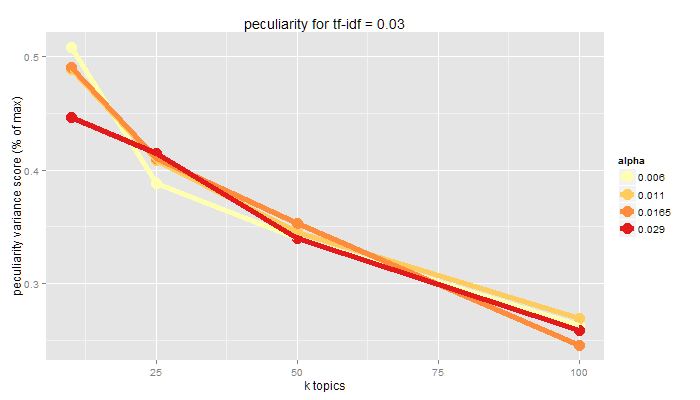
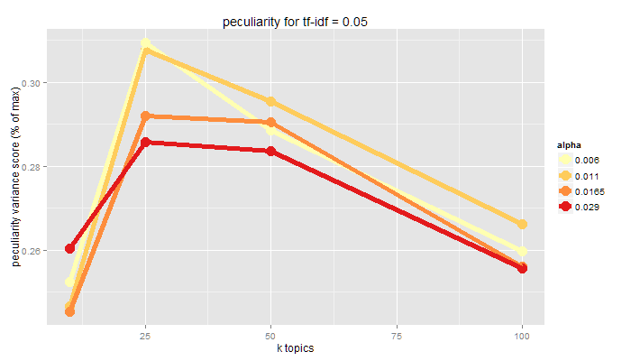

Big Data, Theory, and Black Boxes:
Ensuring Evaluations do not 'Speak for Themselves'
Sam Stehle / @SamStehle
GeoVISTA Brown Bag Series, March 29, 2017

Anderson: "With enough data, the numbers speak for themselves"
“The whole point in performing unsupervised methods in data mining is to find previously unknown knowledge”
many methods do not generate a single, optimal, ‘gold standard’ result
infinite parameter combinations
generative components
partial grouping assignments
How do you validate such a model?
How do you evaluate such a model?
How do you EVALU-date? such a model?
Expectiation-Maximization / Likelihood Function

Interestingness Measures
| Measure | Classification | Description |
|---|---|---|
| Conciseness | Objective | pattern contains few attribute-value pairs |
| Generality/Coverage | Objective | pattern characterises greater proportion of inputs |
| Diversity | Objective | pattern contents are significantly different from one another |
| Peculiarity | Objective | pattern is far from other patterns as per a distance measure |
| Reliability | Objective | pattern occurs in high percentage of applicable cases |
| Novelty | Subjective | pattern contains information not previously known or inferrable |
| Unexpectedness/Surprisingness | Subjective | pattern contradicts existing expectations |
| Utility | Semantic | pattern contributes toward reaching a goal |
| Actionability | Semantic | pattern enables decision making |
An illustration: Latent Dirichlet Allocation
Semi-classification of text

3 critical parameters
- k - number of topics/clusters
- alpha - prior distribution of documents-to-topics
- minimum term-frequency/inverse-document frequency (tf-idf)- defines terms in the vocabulary
Generative model

A case study: Catalonian independence movement

21688 English news articles
August-November 2015
local, regional, national, international news sources
variety of specific sections, where available
Model Sensativity Analysis
4 levels of k: 10, 25, 50, 100
3 minimum term frequency - inverse document frequency
4 alpha prior distributions
Conciseness
pattern contains few attribute-value pairs
fewer topics fit better into user's knowledge base
Generality/Coverage
pattern characterises greater proportion of inputs
higher minimum tf-idf reduces size of vocabulary. documents consisting of no terms in vocabulary cannot be coded
documents consisting of no terms in vocabulary cannot be coded
measured as percent of documents coded
Generality/Coverage
pattern characterises greater proportion of inputs
Diversity
pattern contents are significantly different from one another
topic disparity yields new, separate insights
measured as variance from even distribution of each document to every topic
Diversity
pattern contents are significantly different from one another

Diversity
pattern contents are significantly different from one another
Peculiarity
pattern is far from other patterns as per a distance measure
measured as inverse of proportion of terms shared by topics in a pair of patterns
number of topics and minimum tf-idf influence potentially shared terms
Peculiarity
pattern is far from other patterns as per a distance measure

Peculiarity
pattern is far from other patterns as per a distance measure
 
Reliability
pattern occurs in high percentage of applicable cases
track topics and terms for individual documents across patterns
take random sample of documents
Novelty
pattern contains information not previously known or inferrable
subjective evaluation of topics and term combinations
increased range of terms - higher tf-idf
--and--
increased topics
increase the range of information available
Novelty
pattern contains information not previously known or inferrable
10 topic model: 'glencor' 'casilla' 'aspa' 'volkswagen' 'emiss' 'pet' 'deulofeu' 'elch'
25 topic model: 'dish' 'chicken' 'pan' 'rice' 'dice' 'squid' 'nadal' 'prawn'
50 topic model: 'abus' 'nosecessionist' 'insult' 'shakira' 'pop' 'summon' 'racist' 'fling'
100 topic model: 'pet' 'vet' 'microchip' 'vaccine' 'refuge' 'fenc' 'foncubierta' 'martinez'
Unexpectedness/Surprisingness
pattern contradicts existing expectations
special case of novelty
Utility/Actionability
pattern contributes toward reaching a goal/taking an action
I combine goals and actions in this evaluation
select patterns to map semantic spaces of topics onto geographic space
Summary
| Measure | Recommendation | Confidence |
|---|---|---|
| Conciseness | low k | medium |
| Generality/Coverage | low minimum tf-idf | high |
| Diversity | low alpha, mid tf-idf | medium |
| Peculiarity | low k: low alpha, high k: high tf-idf | low |
| Reliability | * | * |
| Novelty | high topics, low minimum tf-idf | high |
| Unexpectedness/Surprisingness | high topics, medium tf-idf, medium tf-idf | low |
| Utility/Actionability | * | * |
Final thoughts
Thank you!
Sam Stehle
samstehle@psu.edu
@thHigherthFewer